Microwave tubes convert DC power into radio frequency power by using the transit time of an electron beam. The interchange of power is accomplished by velocity modulation and low-loss resonant cavities. This chapter covers the velocity-modulated tubes used in radar: the klystron in its many forms, the backward-wave oscillator, and the traveling wave tube.
The microwave tube uses transit time in the conversion of DC power to radio frequency power. The interchange of power is accomplished by using the principle of electron velocity modulation and low-loss resonant cavities in the microwave tube.
Velocity modulation is defined as the variation in the velocity of a beam of electrons caused by the alternate speeding up and slowing down of the electrons in the beam. This variation is usually caused by a voltage signal applied between the grids through which the beam must pass. In linear beam tubes the direction of the electron beam and the static electric field are parallel to each other. In cross-field tubes the fields influencing the electron beam stand perpendicular to it.
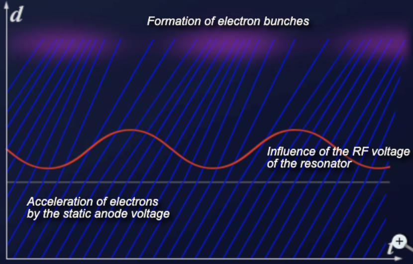
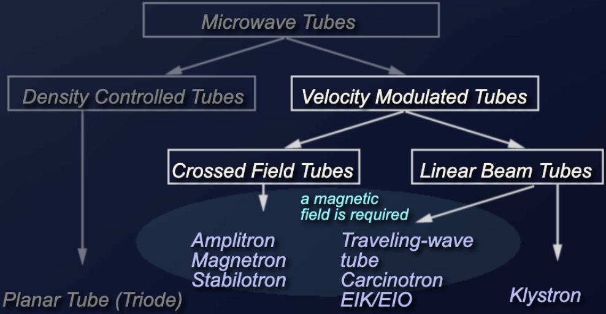
The following table compares the characteristic quantities of the velocity-modulated tubes used in radar technology. Although the planar tube is not a velocity-modulated tube, it was included in the table for comparison purposes.
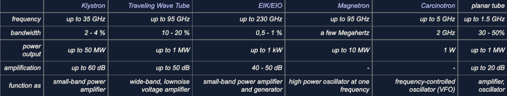
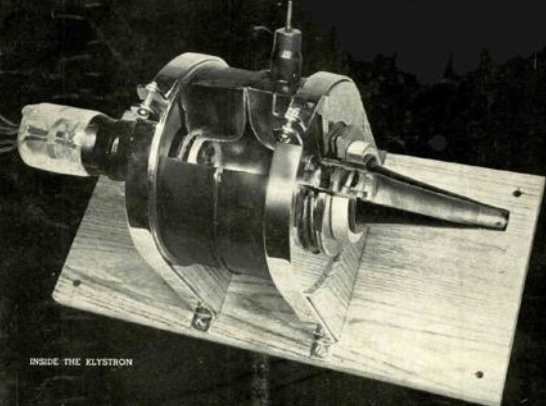
The backward-wave oscillator (BWO), also called carcinotron (from karkinox, the Greek word for the backward-swimming crayfish, a brand name of the company Thomson-CSF, now part of Thales), is an electron tube for oscillation generation that has the advantage of electronic tunability over a wide frequency range. Backward-wave tubes are examples of velocity-modulated tubes.
There are two types of backward-wave tubes. They are distinguished as type M (or M-BWO) and type O (or O-BWO). Type M tubes are cross-wave tubes similar to a magnetron. The O in the type designation comes from the French word for wave, l'onde, and designates that the magnetic field is in the same direction as the electron beam and the slow-wave structure.
The invention of the backward-wave oscillator was simultaneously and independently presented by Rudolf Kompfner (an Austrian scientist living in England) from Bell Labs, and by Bernard Epsztein from Thomson-CSF. Epsztein demonstrated the operation of an M-type backward-wave oscillator on March 31, 1951. Kompfner invented the O-type backward-wave oscillator in 1951 as well, but filed his patent much later.
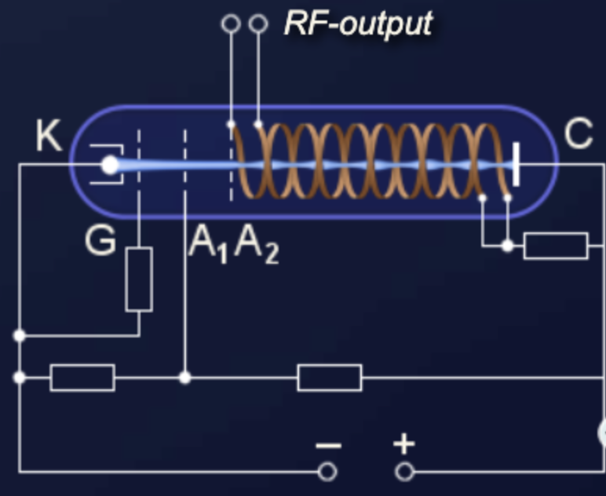
The backward-wave oscillator of type O has a construction similar to a traveling wave tube. The electron beam is focused by a strong magnetic field, but this magnetic field is not involved in the interactions. The slow-wave structure is usually a folded waveguide whose dimensions determine the bandwidth of the tube. A bifilar helix may also be used for lower output powers. As in the traveling-wave tube, the mode of operation is based on the synchronous interaction between the high-frequency wave in the slow-wave structure and the electron beam. While in a traveling wave tube the direction of the wave in the slow-wave structure travels with the electron beam, in the backward-wave oscillator the direction is reversed. When the wave and electron beam travel in opposite directions, the electron beam acts as a feedback element by feeding back the induced velocity changes from the output to the input.
Oscillations are generated if there is a phase dispersion between the velocity of the electrons and the phase velocity of the wave on the slow-wave structure. The velocity of propagation in the slow-wave structure is constant. The velocity of the electrons in the electron beam can be changed by the collector potential (in practice, by changing the anode voltage). Thus the frequency of the generated oscillations can be changed over quite a wide range.
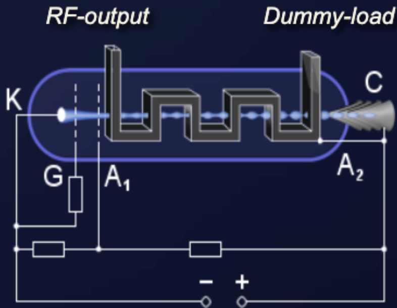
The backward-wave oscillator of type M uses an electric field E between the cathodes and the anode and a magnetic field B perpendicular to it, similar to the magnetron, for the circular deflection of an electron beam. The electrons move perpendicular to field E and field B with a velocity Ve. A strong interaction occurs at a phase dispersion, that is, when the phase velocity of the high-frequency wave in the slow-wave structure is approximately equal to the electron velocity Ve. The electrons acquire an additional velocity component, which leads to a bunching of electrons. Electrons that are in a decelerating electric field of the wave in the slow-wave structure lose the energy they received from the static electric field E and give this energy to the high-frequency backward wave. The backward wave forms a harmonic resonance in space with the electron bunches; that is, the electric field strength of the backward wave reaches a maximum exactly at the points where the electron bunches also have a maximum.
The cold cathode is more negative than the heated cathode to avoid the electrons being captured by the cold cathode after they have absorbed energy during the interaction with the field of the wave in the slow-wave structure. This action also causes the radius of the electron paths to change shortly after leaving the heated cathode. The collector C has anode voltage potential and closes the circuit of the backward-wave oscillator.
M-type backward-wave oscillators can also operate in a slow-wave structure resonant region. This gives them better efficiency, but still allows them to retain the characteristic of electrically tunable frequency within a certain bandwidth. Usually it is sufficient to include only one resonator as a reflector.
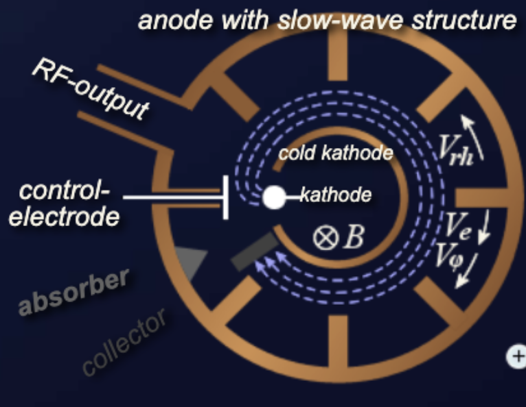
The power levels achievable with this type of tube range from 50 to 1,000 mW. The frequencies that can be generated extend into the terahertz range and are limited only by the slow-wave structure. The tunable bandwidth can typically be more than 10 percent of the center frequency. Compared to other oscillator tubes, it has a rather low efficiency of only about 20 to 30 percent (O-type) and up to 40 percent (M-type), which decreases even more with increasing frequency.
Backward-wave oscillators were used in the early 1960s to the late 1970s in jamming equipment against radar. After that, they were generally replaced there by semiconductor circuits. From 1980 onward, laboratory applications up to the upper terahertz range became interesting.
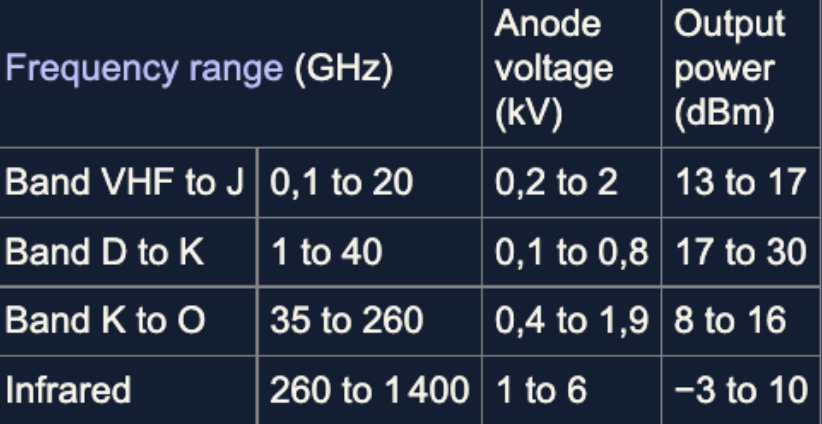
Klystrons are high-power microwave vacuum tubes. They are velocity-modulated tubes used in radar as amplifiers or oscillators. A klystron uses the kinetic energy of an electron beam for the amplification of a high-frequency signal. Klystrons make use of the transit-time effect by varying the velocity of an electron beam. It is a linear beam device; that is, the electron flow is in a straight line focused by an axial magnetic field. The magnetic field is only used to focus the electron beam. A klystron has one or more special cavities around the axis of the tube that modulate the electric field. According to the number of resonant cavities, klystrons are divided into two-cavity klystrons, multicavity klystrons, and repeller klystrons.
The gain of klystron amplifiers can be very high (more than 60 dB), with output power up to tens of megawatts. But klystrons have limited bandwidth (less than 2 percent) because of their use of resonant cavities. They require high supply voltages in the region of hundreds of kilovolts. As expected with vacuum tubes, they have lower reliability, with a mean time between failures of 5,000 to 75,000 hours.
The two-cavity klystron is a widely used microwave amplifier operated by the principles of velocity and density modulation. An electronic oscillator can also be made from a klystron tube when the second cavity resonator is fed back to the first one with a coaxial cable or waveguide. This connection must have a defined delay so that the oscillations are in phase. However, a two-cavity klystron oscillator is awkward in structure, because, when the oscillation frequency is varied, the resonant frequency of each cavity and the feedback path phase shift must be mechanically readjusted for positive feedback. A repeller klystron is better suited for such cases.
A klystron size is determined by the size of the bunching cavities. The physical components of a two-cavity klystron consist of an electron emitter, two resonant cavities, a solenoid magnetic circuit to focus the electron beam, and a collector depression structure. In order to achieve high powers, this electron emitter must emit a large number of electrons. A two-cavity klystron uses two resonant cavities around the axis of the tube which modulate the electric field. In the middle of these cavities there is a grid allowing the electrons to pass. The first cavity with the first coupling device is called the buncher, while the second cavity with its coupling device is called the catcher. The area beyond the buncher grids is called the drift space. The collector collects the energy of the electron beam and changes it into heat.
The collector is clamped to ground potential. A beam voltage of up to several hundred kilovolts is applied between the cathode and the collector, which is why the collector generates X-ray interference and must be shielded with lead.
The electrons injected from the cathode are first accelerated by the high DC voltage before entering the buncher grids and arrive at the buncher with uniform velocity. The signal present in the buncher generates an additional local electric field. The direction of the electric field changes with the frequency of the signal into the buncher. These changes alternately accelerate and decelerate the electrons of the beam passing through the grids. The electrons that pass through the first cavity at zero points of the signal voltage pass through with unchanged velocity; those that pass through the positive half cycles of the signal voltage undergo an increase in velocity; those passing through the negative swings of the signal voltage undergo a decrease in velocity. The variation of the electron velocity in the drift space is called velocity modulation. The faster electrons catch up with the slower electrons and form bunches. The electron beam is then spatially modulated.
The function of the catcher cavity is to absorb energy from the electron beam. The catcher grids are placed along the beam at a point where the bunches are fully formed. The location is determined by the transit time of the bunches at the natural resonant frequency of the cavities (the resonant frequency of the catcher cavity is the same as the buncher cavity). The electrons then leave the catcher at a reduced speed and reach the collector.
The efficiency of a klystron results from the ratio of the power supplied to the klystron (as a DC power supply) and the high-frequency power output. The efficiency of a two-cavity klystron is about 40 percent. Losses occur primarily due to nonideal bundling of the electron density and the remaining energy of the electrons, which is converted into heat in the collector. The average output power is up to 500 kW and pulsed power is up to 30 MW at 10 GHz. The power amplification is up to 30 dB.
Klystron amplification, power output, and efficiency can be greatly improved by the addition of intermediate cavities between the input and output cavities of the basic klystron. These additional cavities are also referred to as gain cavities. They serve to velocity-modulate the electron beam and produce an increase in the energy available at the output. The electron bunches are enhanced, and multicavity klystrons may be used to increase the gain of the klystron or to increase the bandwidth. They are often operated with their cavities stagger-tuned so as to obtain a greater bandwidth of up to 8 percent at a reduction in gain.
A newer concept of multi-chamber klystron is called the kladistron (derived from adiabatic klystron). Kladistrons are high-performance klystrons with a large number of cavities (at least twice as many as conventional klystrons). Kladistrons are not used in radar sets.
Multi-beam klystrons (MBK) are klystrons with multiple electron beams, simply put, a number of single-beam klystrons in parallel with common input and output cavities. Their other cavities and focusing systems can be either common or separate. Multi-beam klystrons are capable of delivering immense amounts of microwave power at lower beam voltages (typically 50 to 80 percent). This also leads to a shorter circuit length (typically 30 to 60 percent), as the electrons have a slower average speed. Another advantage of multi-beam klystrons is that they have much wider bandwidth. Multi-beam klystrons are focused either with magnetic fields or with electrostatic focusing.
Multi-beam klystrons achieve an efficiency of 60 to 80 percent. They are commonly used for accelerator applications. In connection with the term multi-beam klystron, the klystrons with one beam only are called mono-beam klystrons.
In the klystrons considered so far, the cross section of the electron beam was round. They are also referred to as pencil-beam tubes. In a sheet-beam klystron, the electron beam is flat. This is achieved by a special shape of the electron gun.
Sheet-beam klystrons have beams of much lower current density. Since their cathode loading is much lighter, they can be expected to have a much longer life as well. They can also be constructed as multi-beam klystrons, for example by arranging two beams on top of each other to form a double sheet-beam klystron (DSBK).
The fabrication of a sheet-beam klystron is much simpler and requires considerably fewer parts. All cavity resonators, the drift space, and the collector are integrated (for example by milling) into a flat rod made of solid material. This rod and a mirrored rod are placed on top of each other. This creates the complete resonance structure of the sheet-beam klystron. Much more effective cooling is possible than is available in the pencil-beam tube.
Another tube based on velocity modulation, and used to generate microwave energy, is the reflex klystron (repeller klystron). The reflex klystron contains a reflector plate, referred to as the repeller, instead of the output cavity used in other types of klystrons. The electron beam is modulated as it was in the other types of klystrons by passing it through an oscillating resonant cavity, but here the similarity ends. The feedback required to maintain oscillations within the cavity is obtained by reversing the beam and sending it back through the cavity. The electrons in the beam are velocity-modulated before the beam passes through the cavity the second time and will give up the energy required to maintain oscillations. The electron beam is turned around by a negatively charged electrode that repels the beam. This type of klystron oscillator is called a reflex klystron because of the reflex action of the electron beam.
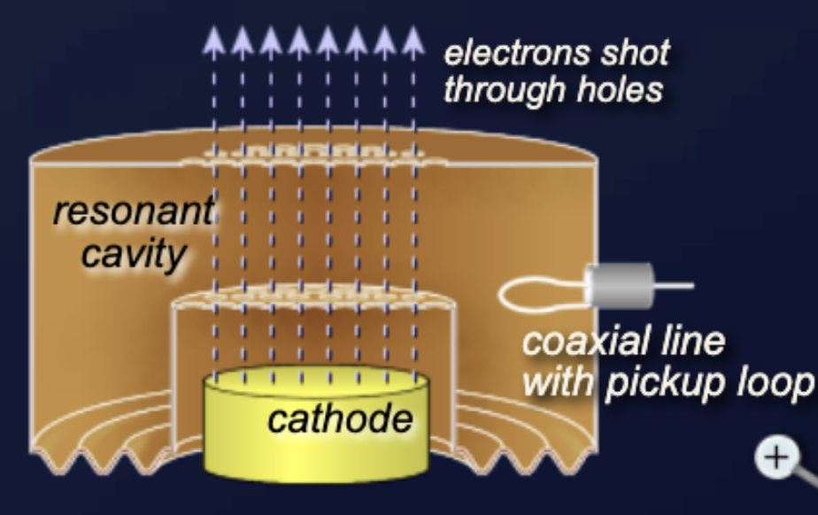
The cavity resonator must be flexible on at least one wall due to the tolerances of the tube manufacturer. There are no two identical reflex klystrons, even if they are manufactured in the same series. Each reflex klystron therefore has its own calibration protocol.
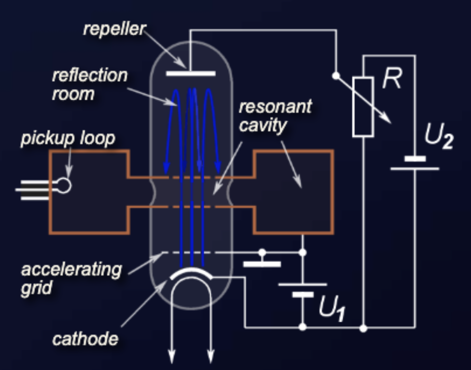
Three power sources are required for reflex klystron operation:
The electrons are focused into a beam by the electrostatic fields set up by the resonator potential in the tube.
The reflector voltage must be adjusted so that the bunching is at a maximum as the electron beam re-enters the resonant cavity, thus ensuring that a maximum of energy is transferred from the electron beam to the RF oscillations in the cavity. The voltage may be varied slightly from the optimum value, which results in a slight variation in frequency (about 1 percent), but also in loss of output power.
Klystrons have a wide range of applications in high-frequency technology, as the performance achievable with klystrons cannot be achieved with semiconductor components. Therefore, the low reliability of vacuum tubes is accepted.
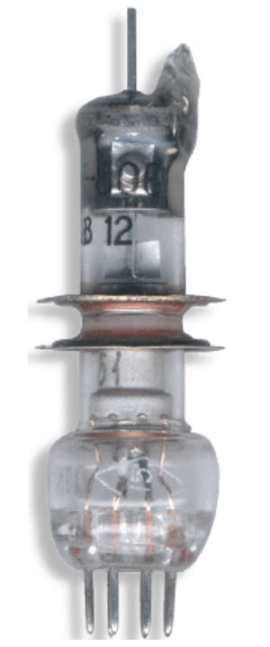
Traveling wave tubes (TWT) are vacuum tubes used as high-gain, low-noise, wide-bandwidth microwave amplifiers. A TWT is capable of gains from 40 to 70 dB with bandwidths exceeding two octaves. TWTs have been designed for frequencies as low as 300 megahertz and as high as 100 gigahertz. Power levels range from a few watts to 10 MW. The TWT is primarily a voltage amplifier. Together with the klystrons they form a special group of linear-beam tubes within the velocity-modulated tubes. There are two different main types of TWT:
Both types have the same operating principles and both incorporate the same basic components. They mostly differ in the construction of the slow-wave structure. The wide-bandwidth and low-noise characteristics make the TWT ideal for use as an RF amplifier in microwave equipment. Because of the special low-noise characteristic they are widely used as an active RF amplifier element in microwave receivers and transmitters in radar systems and in space communications.
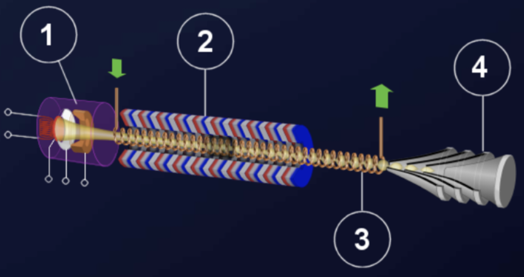
The physical construction of a typical TWT consists of four basic elements:
All components of the TWT are held under a very high vacuum. The RF input and output may couple onto and be removed from the helix by waveguide directional couplers that have no physical connection to the helix.
The electron gun is similar in construction to that in all cathode ray tubes. It consists of an indirectly heated cathode, which must be heated to a temperature between 850 and 1,100 degrees Celsius (about 1,500 to 2,000 degrees Fahrenheit) to produce appreciable electron emission. A focusing grid with the same potential as the cathode (or a small negative bias up to minus 20 volts relative to the cathode) directs the electrons in the desired direction. One or more anodes are used to generate the requisite electron velocity. The beam passes the anodes through a hole or a grid and travels through the slow-wave structure. The electron gun is covered by a shielding box to prevent hazardous radiation.
The surrounding magnet provides a magnetic field along the axis of the tube to focus the electrons into a tight beam. This magnet may be either a permanent magnet or a solenoid (electromagnetic) focusing element. A permanent magnet does not need a power supply and ensures that the magnetic field is always present. The disadvantage is that a permanent magnet does not provide an adjustment of the magnetic field to optimize the tube performance.
If a single permanent magnet is replaced by a number of smaller magnets, then the size and total weight of the magnet structure is reduced. The housing is usually made of aluminum to prevent the disturbing influence of ferromagnetic materials. Extrinsic magnetic materials can interfere with the uniform magnetic field and destroy the traveling wave tube. Therefore the packaging of a traveling wave tube is often of oversized dimensions.
Since the electron beam in the tube must travel slower than the speed of light, there must be some means of slowing down the forward velocity of the electromagnetic wave. The electron beam speed of a TWT is about 10 to 50 percent of the speed of light. The speed depends on the cathode voltage, which may be between 4 and 120 kilovolts. The slowdown is done by means of a slow-wave structure, on which the electromagnetic wave propagates.
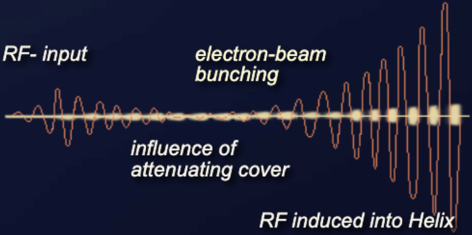
The collector is a voltage electrode of the TWT. It is at the same potential as the body of the tube, and this is usually at ground. In the absence of an input signal, the entire beam energy must be dissipated in the collector. Forced air cooling or liquid cooling of the collector is necessary at high-power TWTs. High-power TWTs often use multi-stage collectors.
The input voltage creates an additional axial electric field that moves as fast as the electron beam on the wire of the helix. This electric field accelerates (in the positive half-wave) or decelerates (in the negative half-wave) the electrons in the electron beam. This process is called velocity modulation. If the electrons of the beam were accelerated to travel faster than the waves traveling on the wire, electron bunching would occur through the effect of velocity modulation.
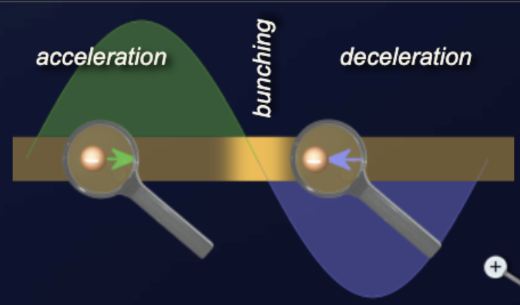
By delivering energy to the electron beam, the power of the traveling wave decreases. An additional attenuator causes this decrease to reach zero. This attenuator also prevents any reflected waves from traveling back down the helix.
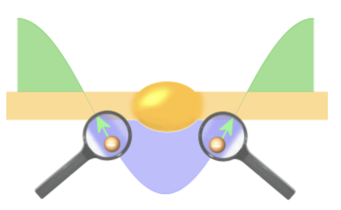
However, the velocity modulation is still effective in the electron beam. The faster electrons catch up with the slower electrons and bunching occurs. The electron beam bunching starts at the beginning of the helix and reaches its highest expression at the end of the helix. The electron bunches in the beam give up energy to the wire of the slow-wave structure. They repel the electrons in the wire and generate a new traveling wave in the helix. The energy from the bunches increases the amplitude of the traveling wave in a progressive action that takes place all along the length of the TWT.
The injection of the wave in the slow-wave structure causes a phase shift of 90 degrees relative to the initial waveform. When the electrons deliver their energy to the wave in the helix, they slow down. In some TWTs the helix is therefore made narrower at the end of the tube. This slows down the speed of the electromagnetic wave in the slow-wave structure as well.
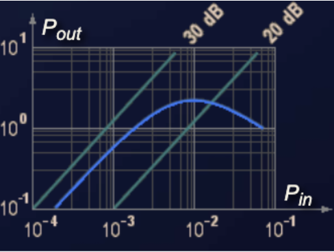
The attainable power amplification is essentially dependent on the following factors:
The gain of a given TWT has linear characteristics of about 26 dB at small input power. If you increase the input power, the output power does not increase for the same gain. So you can prevent saturation of, for example, the following mixer stage in the radar receiver. The relatively low efficiency of the TWT partially offsets the advantages of high gain and wide bandwidth.
The gain of a TWT is affected by the interaction of the electrons with the electric field caused by the wave in the slow-wave structure. The effectiveness depends on the frequency response of the slow-wave structure. A helix may have a bandwidth of more than two octaves. If the slow-wave structure contains resonant parts, then the bandwidth depends on its frequency response. The bandwidth of commonly used coupled-cavity TWTs is about 10 to 20 percent of the center frequency.
The most important parameter for the use of the traveling wave tube as a pre-amplifier in radar receivers is the noise figure of the traveling wave tube. This determines the sensitivity of the receiver and thus the maximum range of the radar. The noise figure of recently used TWTs is 3 to 10 dB. There are three unavoidable sources of noise in a traveling wave tube. Shot noise results from the random emission of electrons from the cathode. Velocity noise arises from different velocities of the emitted electrons. Johnson-Nyquist noise is the electronic noise generated by the thermal agitation of the electrons. The noise figure depends on the size of most supply voltages of the traveling wave tube. For example, if the voltages at the electrodes are 5 percent less than the optimum values, the noise figure approximately doubles.
The previously described helix may be replaced by some other slow-wave structure such as a ring-bar, ring-loop, or coupled-cavity structure. The structure is chosen to give the characteristic appropriate to the desired gain, bandwidth, and power characteristics.
A contra-wound helix uses two helices wound in opposite directions. Both helices must be identical in dimensions. A contra-wound helix is less sensitive to backward wave interactions and therefore allows higher operating voltages, currents, and power. The penalty for these advantages is that the bandwidth is less than that of a single helix.
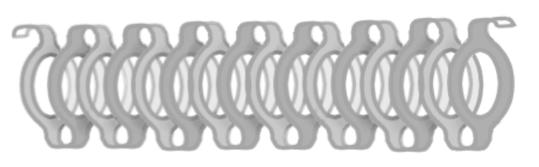
A ring-loop TWT uses loops as a slow-wave structure to tie the rings together. These devices are capable of higher power levels than conventional helix TWTs, but have significantly less bandwidth, 5 to 15 percent, and a lower cut-off frequency of 18 GHz.
The feature of the ring-loop slow-wave structure is high coupling impedance and low harmonic wave components. Therefore the ring-loop traveling wave tube has the advantages of high gain (40 to 60 dB), small dimensions, higher operating voltage, and less danger of backward wave oscillation.
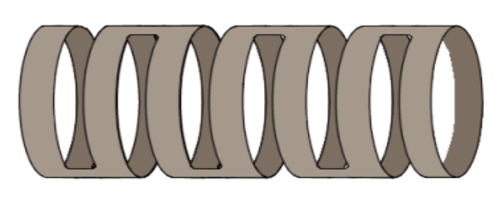
The ring-bar TWT was developed from the contra-wound helix and has the same characteristics as the ring-loop TWT. This slow-wave structure is very easy to make by precise laser cuts in a thin copper pipe.
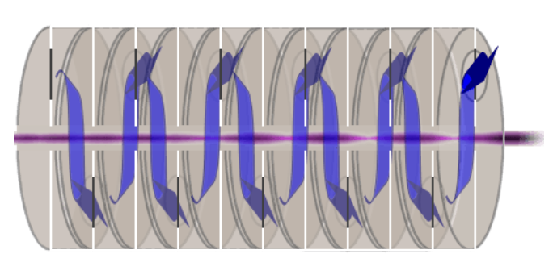
The coupled-cavity TWT uses a slow-wave structure of a series of cavities coupled to one another. The resonant cavities are coupled together with a transmission line. The electron beam is velocity-modulated by an RF input signal at the first resonant cavity. This RF energy travels along the cavities and induces RF voltages in each subsequent cavity.
If the spacing of the cavities is correctly adjusted, the voltages at each cavity induced by the modulated beam are in phase and travel along the transmission line to the output, with an additive effect, so that the output power is much greater than the power input.
Check your understanding. Five quick questions on velocity-modulated tubes, auto-scored, with your answers saved on this device.